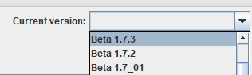
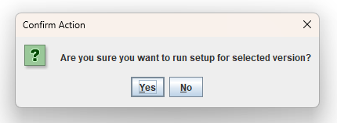
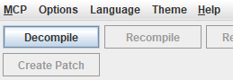
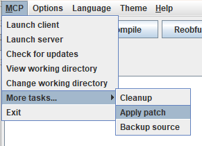
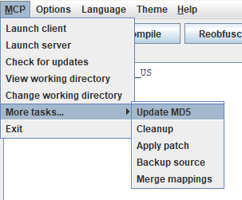
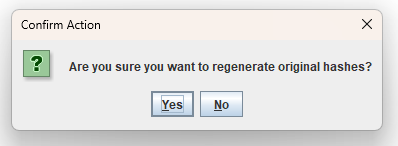

is a Minecraft mod loader for legacy versions such as beta 1.7.3
that allows users to drag-and-drop mod JARs into the mods folder
without needing to worry about class conflicts.
Installation
The process requires either the installer [WIP] or a launcher which allows for easy jar modding.
This tutorial explains the jar modding method.
First download minecraftborge.zip,
asm-9.9.jar,
asm-tree-9.9.jar and
asm-commons-9.9.jar.
Then, add those files to the Minecraft jar using your preferred method.
After this you should be all set to install mods!
Installing mods is even simpler: simply download the mods of your choice (make sure they're compatible with your Minecraft version) and drag them into the 'mods' folder
located in your .minecraft instance folder.
Mod development
So you want to code a mod for MinecraftBorge? Great! The setup may be a little convoluted for now but that will change in the future(TM).
Start by downloading RetroMCP-Java (GUI or CLI, either one works but this tutorial uses the GUI variant).
Additionally, download the latest MinecraftBorge patch files.
Also make sure you run RetroMCP using a Java JDK! A mere JRE will not do (my recommendation is the Azul Zulu distribution).
Step 1: setup
Place RetroMCP into the desired workspace folder and run it. Then select the desired MinecraftBorge version (only b1.7.3 is available as of now).
It's also recommended to set a Java 8 JDK as JAVA_HOME in the RetroMCP options just to be sure, but it is not technically required.


Step 2: decompilation
Press the 'decompile' button, and wait for it to finish. If any warnings appear they can usually be safely ignored.

Step 3: patching
Extract the minecraftborge.patch.zip and copy the contents into the 'patches' folder (located in the same directory as RetroMCP, create the folder if it does not yet exist).
After this, close and reopen RetroMCP to ensure it actually notices the patch files being present.
Then, under MCP > More tasks... select 'Apply patch' and wait for it to finish. Any warnings can probably be ignored without issue.

Step 4: brainwashing
Time to brainwash RetroMCP into thinking the new MinecraftBorge source is actually the original source code!
Under MCP > More tasks... select 'Update MD5' and wait for it to finish. This makes sure that when you compile, reobfuscate and build only your mod classes get put into the zip,
and none of the Minecraft or MinecraftBorge classes are included (that would lead to some sort of catastrophe).


Step 5: code away!
That was all the setup! Now the minecraft and minecraft_server workspaces can be used to code your mod for the client and server respectively.
Make sure to NEVER at ANY TIME modify Minecraft or MinecraftBorge classes as they would then be included in your mod JAR and that is something unwanted.
Have fun modding!